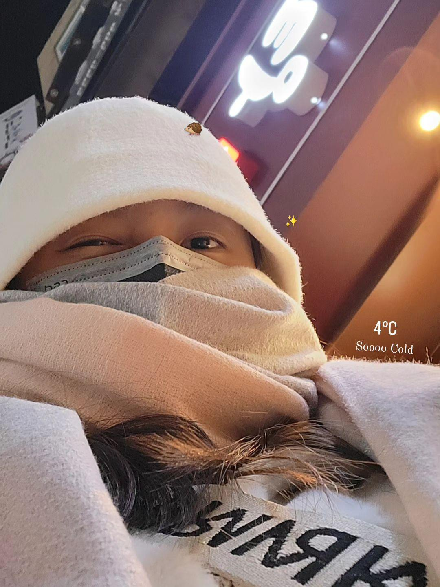

ABOUT


LIFE
比誰照片更年輕的話 這怎麼輸
從小到大的我就是個欠扁又好笑的人類
愛看鬼片又不敢洗澡晚上也不敢睡覺
拖延症末期但屢教不改
喜歡出去玩 打麻將也很不錯
俗稱又菜又愛玩
國中去荷比法英的照片
當年羨慕表哥可以去遊學團
後來撒了個嬌我就成功去了
會撒嬌的女人有糖吃 大家學起來
荷蘭很悠閒 比利時巧克力很好吃
法國世足冠軍好嗨 英國帥哥很多

剛從韓國回來的me 熱騰騰的新照
快把韓國當我家躁咖在走了
願望除了發大財 也希望搬去韓國 東西太好吃了
買衣服的時候還被老闆說我韓文講得不錯
看來真的移居有望
SKILLS
程式技能
JAVA 50%
PYTHON 70%
HTML 75%
CSS 75%
專業技能
WORD 80%
PPT 70%
FILM 90%
EDIT 85%